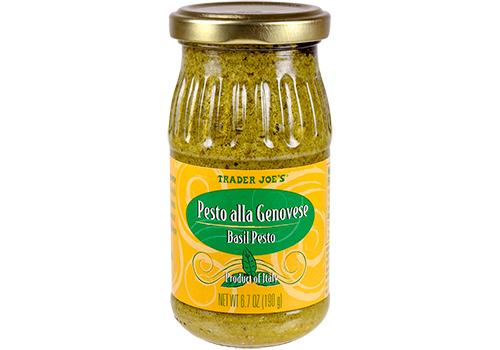
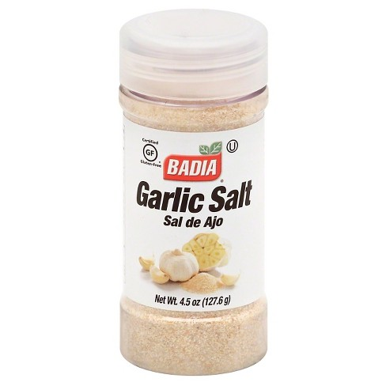
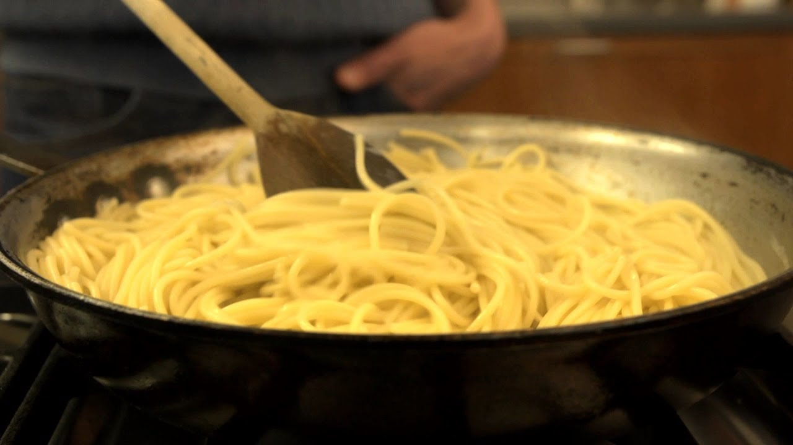

To make the creamy pesto, you will need the following ingredients
- Trader Joe's Basil Pesto 
- Heavy cream
- Parmesean cheese
- Garlic salt 
- Yellow onion
- Any type of pasta (preferrably speghetti)
- Salt
- Black pepper
*Optional*
- Red pepper flakes
- Diced ham or prosciutto
- Grilled chicken
- Grilled or baked salmon
- Boil your Pasta: Turn your stove up to high heat and boil some water to completly submerg the pasta. To add flavor and shorten boiling time, add salt. Once the water has boiled, add your pasta. *Make sure to check the cook time on the packaging*
- Sautee Your Onions: Heat up a skillet on medium-high heat with 3 tablespoons of olive oil. Once hot, dice half of a yellow onion and sautee until translucent.
- Add Your Protein: If you have any meat that you would like to add, fry it in with the onions. Otherwise, skip this step.
- Add The Seasoning: On top of the onions, add a few shakes of garlic salt and a dash of black pepper.
- Add The Cream: Depending on how thick you want your sauce, add a generous amount of heavy cream to the sauteed mix. For more sauce, add more cream.
- Add Your Pesto:At this point, the cream should be a light tint of brown, depending on how strong you want the pesto flavor to be add more or less than 2 tablespoons of pesto to the pan.
- Add Parmesean Cheese: Be Generous!! Make it as cheesy as you'd like. Fold the cheese into the sauce to prevent it from coagulating.
- Add Your Pasta: Once the pasta is al dente, drain your pasta, keeping a few tablespoons of starchy water still in the pot, and pour into the sauce pan. Fold the sauce into the pasta. 
- Spice it up: At this point, you can add some red pepper flakes for a lil' kick.
And Voila! You're done! Enjoy your meal.